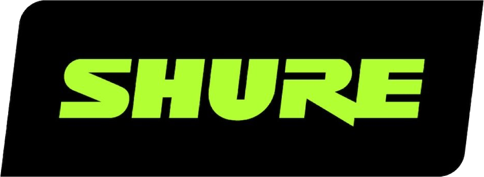
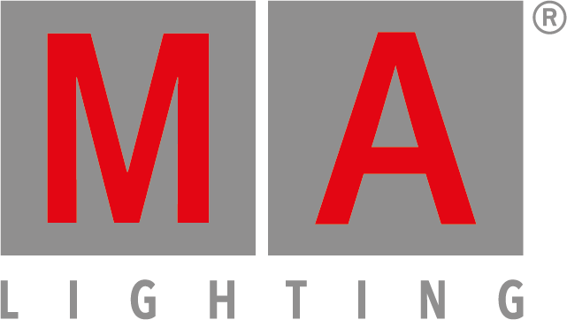
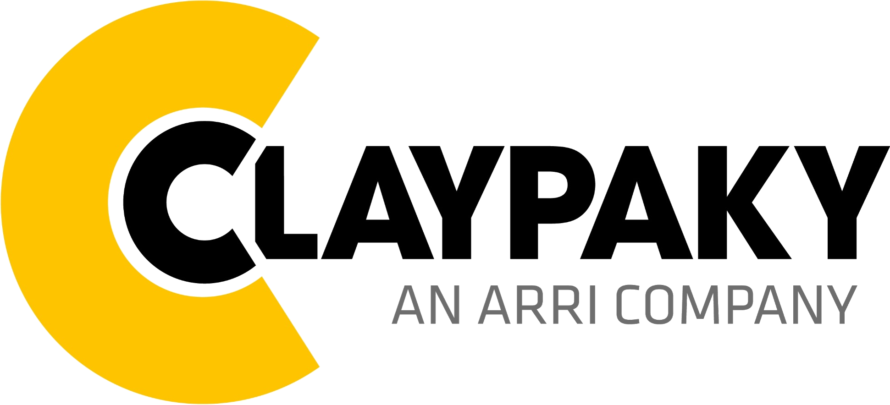
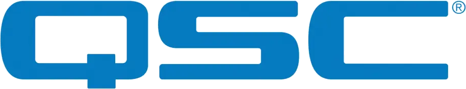
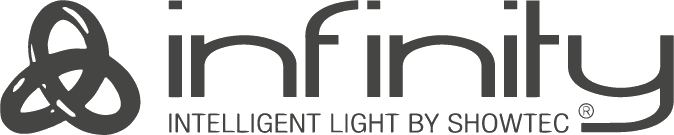
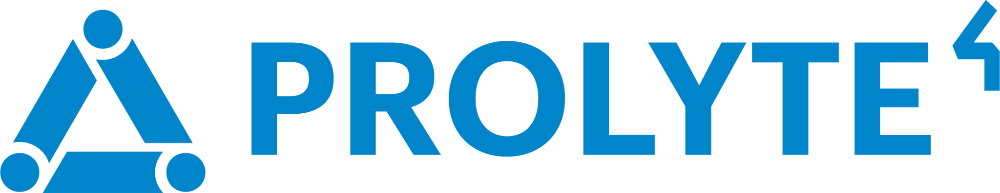
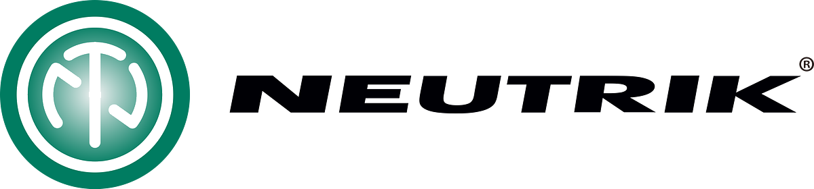
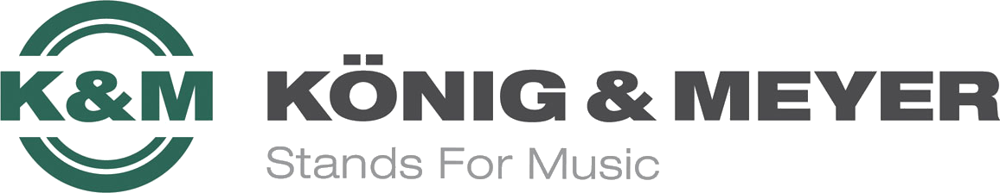
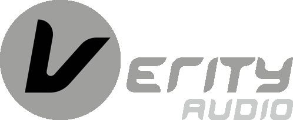
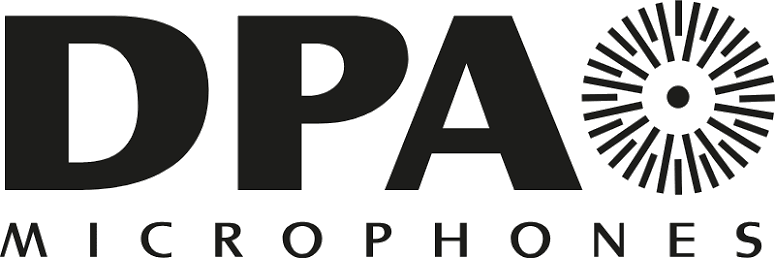

Sound · Light · AV · Special FX
Onze passie,
jouw event
Van een tuinfeest of bruiloft tot een festival of bedrijfsevenement. Decibel verzorgt licht, geluid, video, special effects, verhuur en technische ondersteuning voor evenementen van elke omvang.
Decibel Sound & Light Equipment
Licht, geluid en AV voor ieder evenement.
Je kunt bij ons terecht voor losse apparatuur, een compacte set voor een feest of een volledige technische productie. We denken mee op basis van de locatie, het aantal bezoekers en de sfeer die je wilt neerzetten.
Wat kunnen we voor je verzorgen?
Van los materiaal tot complete productie.
Professionele apparatuur
Professioneel materiaal van vertrouwde merken.
We werken met apparatuur van merken die zich dagelijks bewijzen in verhuur, liveproducties en evenementen. Betrouwbaar materiaal, netjes onderhouden en afgestemd op de toepassing.










Verhuurcatalogus
Bekijk ons volledige assortiment.
In onze verhuurcatalogus vind je een overzicht van onze apparatuur. Zoek gericht naar het materiaal dat je nodig hebt of neem contact met ons op voor advies en beschikbaarheid.
Veelgestelde vragen
Snel duidelijk.
Leveren jullie alleen materiaal of ook complete producties?
Allebei. Je kunt losse apparatuur huren, maar we verzorgen ook complete producties inclusief transport, opbouw, afbouw en technici.
Doen jullie ook zakelijke evenementen?
Ja. Voor congressen, bedrijfsevents, presentaties en beurzen verwijzen we via de navigatie direct door naar Decibel Corporate.
Kan ik ook een offerte krijgen voor een kleiner feest?
Ja. Van kleine privéfeesten tot grotere festivals: we denken mee op basis van locatie, aantal gasten, sfeer en budget.
Binnenkort een event?
Neem vrijblijvend contact op, dan bespreken we samen uw ideeën.